01
HOUSTON BASECAMP · T-24:00:00 · MAIN STREET
The black truck
A long black truck pulls up at the coffee shop. A mission officer steps out with a folder and offers the family the very important space mission.
Daddy, Abbie, Ani
A family couch game for the big TV. Daddy, Abbie and Ani fly the pink rocket to the Moon base together, out loud: everyone has an important job, everyone votes on the story, and Houston talks back for real.
Tonight, from the black truck on Main Street to the Moon base pad. Light frames are Earth (light mode), dark frames are the Moon (dark mode). The launch clock ticks through every one, and a calm cutscene with the mission card sits between each.
A long black truck pulls up at the coffee shop. A mission officer steps out with a folder and offers the family the very important space mission.
Everyone says yes, out loud or on their own button. Three chips light up, the officer stamps the folder, and the clock starts.
A huge rocket port lands in the street. The pink rocket appears on it in a burst of light. The whole street gasps.
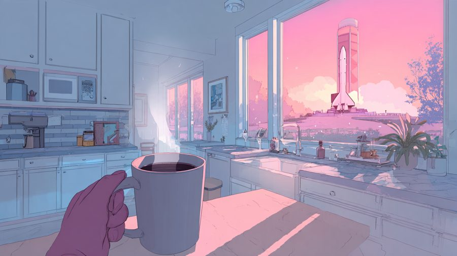
Coffee, bub at his heels, the pink rocket through the window. Two choices: sunrise or Moon pancakes; Grace's radio or bub's toy rocket.
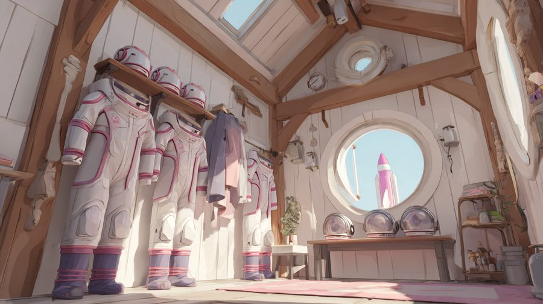
Abbie needs her suit and asks Ani to help. One picks each part, the other fastens it. Abbie draws her patch.
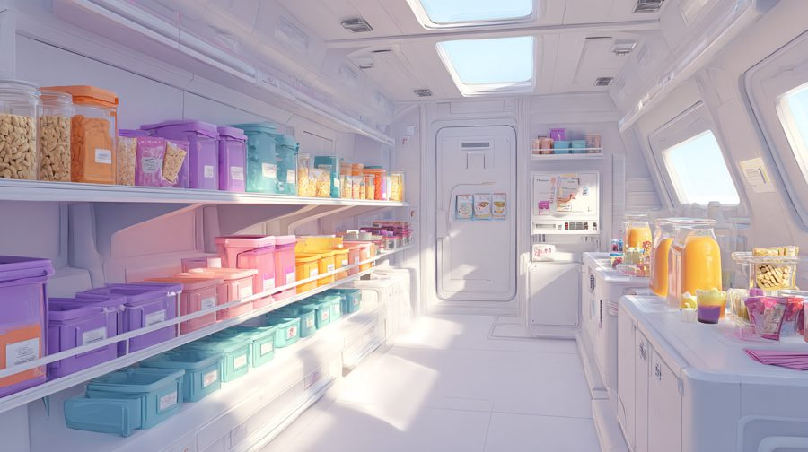
Ani packs a snack pack for each of us, one thing from every colour shelf. Abbie shouts requests.
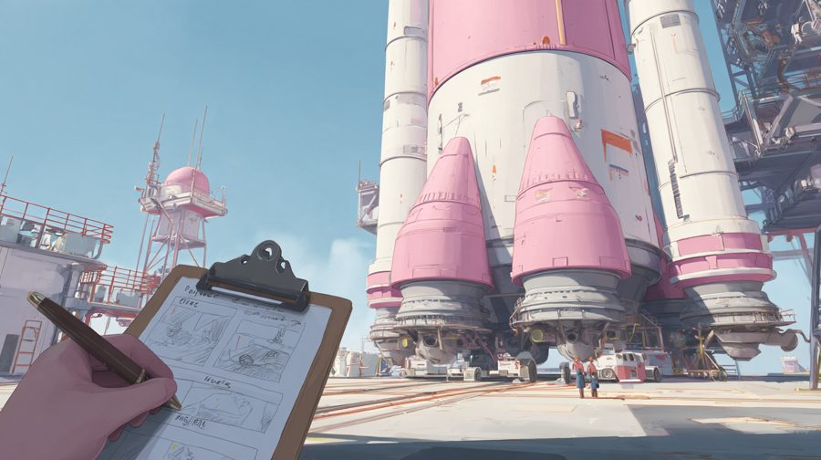
Clipboard walk-around of the pink rocket. Oil on a window, an unplugged oxygen line, a loose cap: Daddy finds them, the girls fix them.
Abbie: toy rocket or a drawing for the base. Ani: star map or harmonica (it comes back for the Star Child).
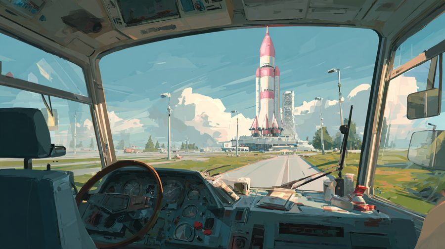
We doze off. Muffled engine, eyes open in two slow blinks, the rocket huge in the windscreen. Houston on the bus radio wakes us.
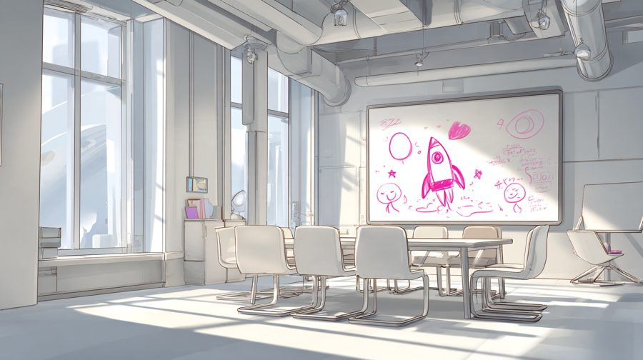
The launch plan draws itself stroke by stroke like a kid's marker drawing: stick figures, the hose, the bulb, the ARM lever, whoosh.
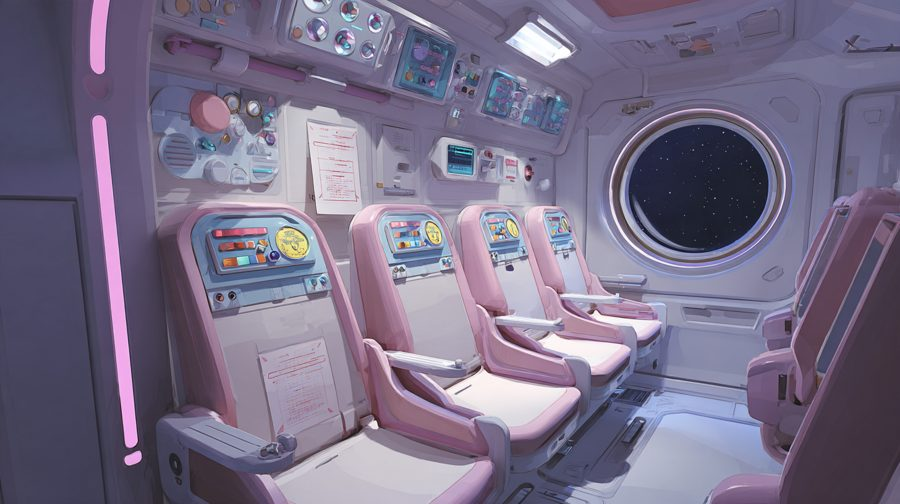
Four seats, the paper checklist, the hatch thunk. "Moon Rocket, this is Houston. Good morning, crew."
Live Houston runs the jobs: oxygen, helmets, launch lights, fuel, the GO poll, Daddy's ARM switch.
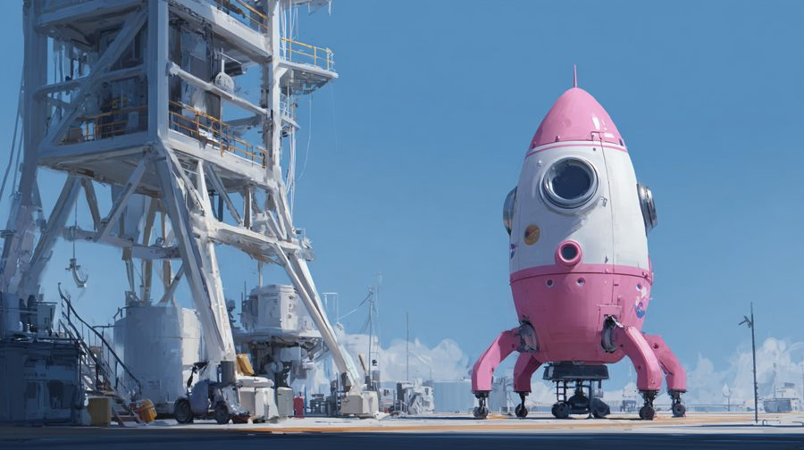
Count down together. The seat shakes, the sky goes blue, deep blue, black. Engine cut-off, stage clunk, floating crayons.
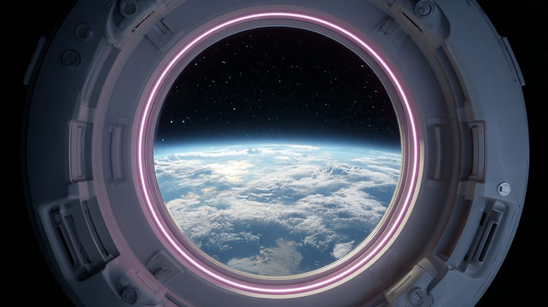
Share Ani's snack packs, look at Earth, a song on Grace's radio, chat with Houston.
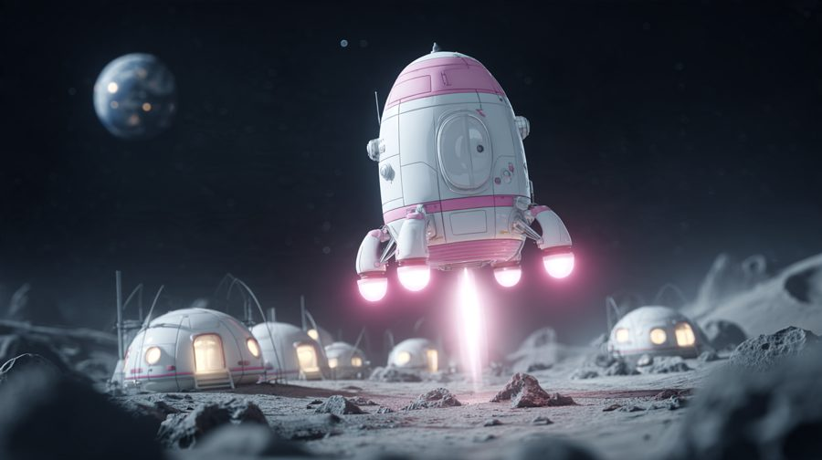
Daddy flies; the girls watch the PIP camera and call out rocks. Landing lights (Abbie), feet down (Ani).
Touchdown, the airlock lights blink on. Daddy's golden memory key. End of Part 1.
Midjourney, drawn this morning for Part 1. Every pick, prompt and job id is in tools/moon-mission/art/.
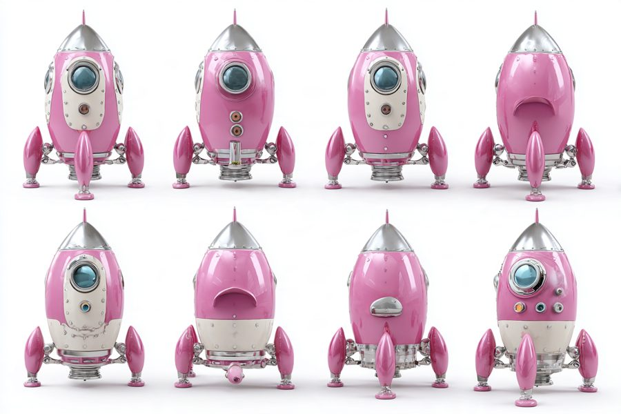
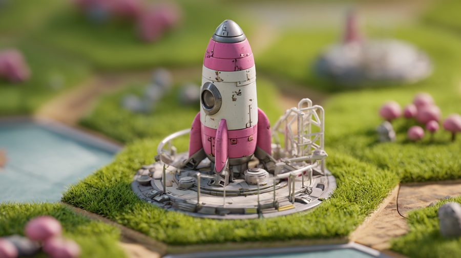
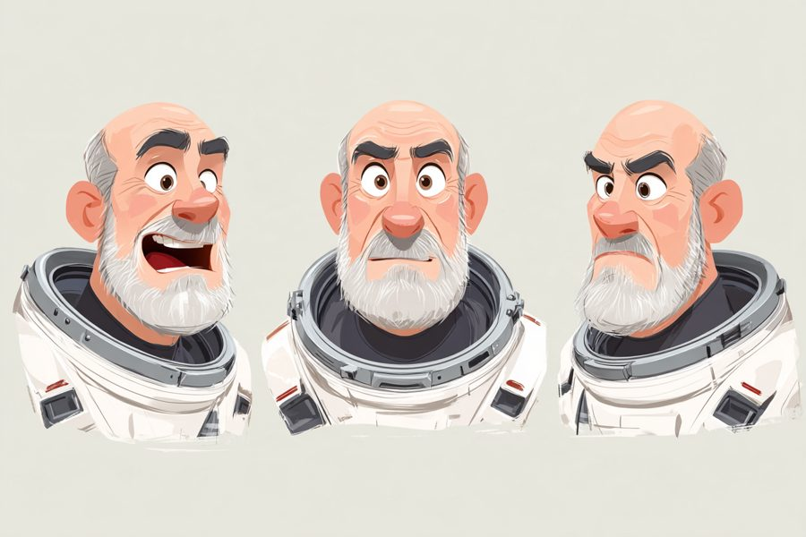
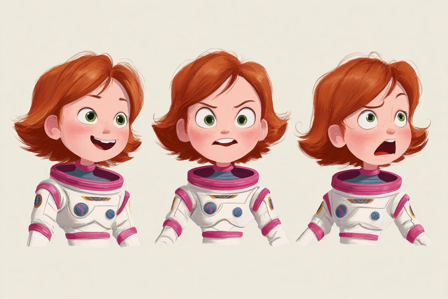
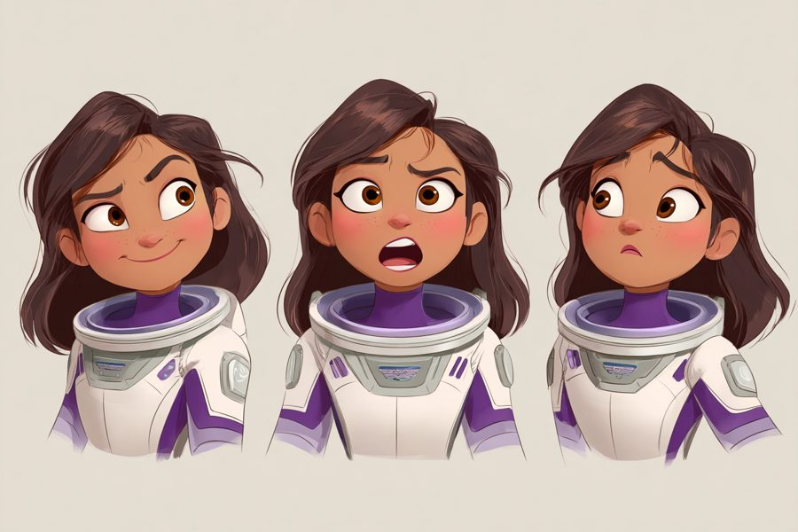
Still to fix in the next pass: the flight check and crew bus show a tall realistic rocket instead of our round pink one; the Earth porthole is too photographic; Daddy's beard should be salt-and-pepper, not grey.
Each job is a key. The picture on the key matches the switch on the TV. Abbie's oxygen key is lit: it's her turn.

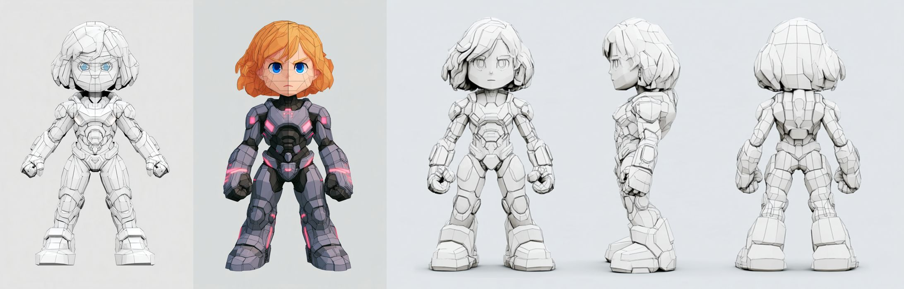
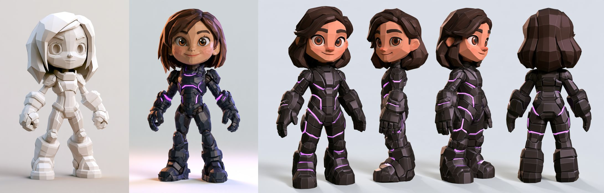
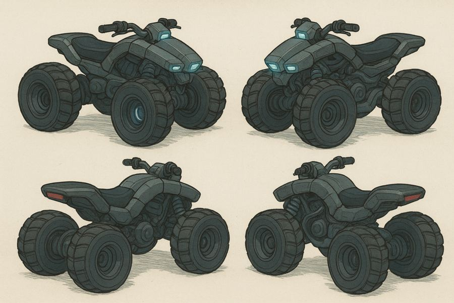
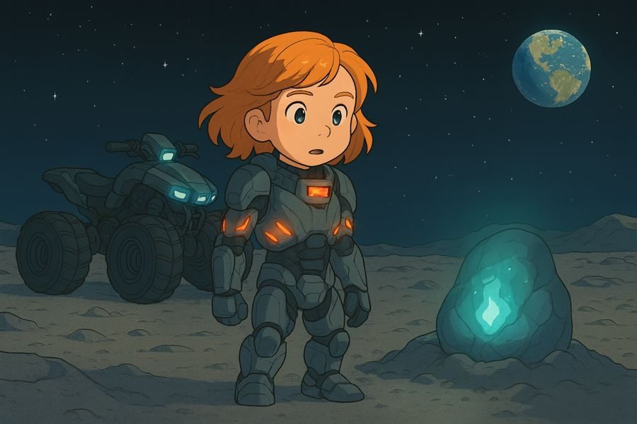
A family couch game for the big TV. Daddy, Abbie and Ani fly the pink rocket to the Moon base, together, out loud. Part 1 (tonight, after ballet): launch morning, the launch itself, the landing, and arriving at the Moon base.
Identity record: moon-mission.identity.json (schema 1.1). Story source: Evan's trek pack ("Abbie and Daddy's Moon
Mission", /mnt/project-files/trek.zip). Heroes and buggy art: AW-STUDY-0029 Moon Heroes. Base environment: AW-STUDY-0031
Moon Base Kit. Voices: AW-STUDY-0030 Family cast.
| Act | Name | Games | Ends with |
|---|---|---|---|
| 1 | Launch Morning (Part 1, tonight) | the rocket tile, mission cards, Daddy's choices, three get-ready jobs, the crew bus, whiteboard training, Game 1 Launch, Game 2 Lunar Lander | the lander's feet touch the pad outside the Moon base; Daddy's memory key |
| 2 | The Base | Game 3 Wire Puzzle (the relays), Game 4 Bug Zapper (the gem bugs), Game 5 Star Child Harmonizer | the Star Child hatches and sings with you |
| 3 | Home | Game 6 Buggy Ride Home | the buggy rolls into the hangar; the family photo |
It's one evening per act. Each act is 30-45 minutes and stops at a cosy place.
Who plays. Daddy plays Daddy. Abbie and Ani play themselves. A fourth seat (Mommy, a friend) can join as Flight Engineer at any time. Everyone is in the same rocket. The camera is first person from whoever has the spotlight, and the others are seen beside them in their seats.
Jobs, not turns. Every beat gives each person a job they own, and the beat can't go on without them. The jobs are physical and loud, and each one is a six-year-old's important job: - Abbie: Oxygen Officer (plug in the oxygen, check the green lights, seal the helmets). - Ani: Lights and Radio Officer (cabin lights, the radio, and saying "Roger!" to Houston). - Daddy: Commander (the checklist, the big arm switch, and flying the lander). - Guest: Flight Engineer (fuel, the countdown clock, the snack pack). A job is a key on the capsule panel (the Stream Deck) or a button on your own pad. The key shows the job's picture.
Group choices. When the story forks, everyone votes by pressing. Each choice is a line beneath the thought (>),
with a small glowing chip on it for each vote, coloured by person (pink Abbie, purple Ani, blue Daddy, green Engineer).
- A majority wins after three seconds.
- If it's a tie, the Captain's Hat decides. The hat is a real object that travels with the crew, and it moves to a new person after
every choice, so everyone gets to be the decider.
- Some choices belong to one person: their face lights up and only their button counts ("Ani, it's your patch!").
Group dynamics, made fun: - Cheering: holding all buttons together does a "together" move (the cabin cheers, Houston notices). - Helping hands: if a job is waiting more than 8 seconds, its key starts to pulse and another person can "help". Both get the credit. - No one fails alone. A miss is shared and funny ("Oops, that was the snack button!"), never one child's fault.
Lots of text, readable from the sofa. Every line is on screen in big type (TV-safe, 48 px at 1080p, at most two lines) and also spoken in the character's own voice, because six-year-olds can't read it all yet. Reading along with the voice is part of the fun. Captions sit on the bottom edge like the basement's inner voice, in the Moon dialect: white on a thin dark glass bar, with the speaker's colour as a dot.
The grammar is docs/design/INTERACTION_GRAMMAR.md rules 7-8: a thought or line, then > choices beneath.
moon-mission/script.json: each node is a line (who, text,
voice line id), its choices, what each choice sets (flags) and where it goes. A choice can change a later line,
an item you carry, or which side quest opens.> lines ("Are you scared?", "What's on the Moon?", "Tell me
about Grace"). These are scripted. Houston, and later the Star Child, can also answer freely, live (section 6).The shared player inventory (simulations/inventory.mjs) holds what the crew carries. Each item says who found it.
Crafting is building your suit (Get ready 1) and Ani's meal plan (Get ready 2), and later fixing things at the base. A recipe is parts laid on the workbench:
| Recipe | Parts | Makes |
|---|---|---|
| Space suit | suit body + gloves + boots + chest pack | your suit (colour = you) |
| Helmet | helmet shell + visor + light | your helmet |
| Mission patch | patch blank + a drawing stamp | your patch (it shows on the suit all game) |
| Oxygen pack | canister + hose + clip | plugs into the seat |
| Snack pack (Ani's meal plan) | one thing from each colour shelf + a sticker | one per crew member, shared in orbit |
| Glow wand (Act 2) | glow stick + crystal shard | it lights the dark tunnel at the base |
| Bug net (Act 2) | net + pole + crystal | the bug zapper's tool |
Starting items: the toy rocket (Abbie), the old radio (Daddy, from Grace's basement), a star map (Ani), crayons.
Houston is a real-time voice on the capsule radio. The family talks to it out loud, and it answers in its own designed voice. "We HAVE TO GET IT RIGHT", so this section is the heart of Part 1.
How it works (reusing what is live):
- The brain is the live-mode relay (api/live.js ticket, then api/live-socket.js to the realtime model), with a new
houston policy: its own instructions, its own small tool set, and the same PG and jailbreak guard. Its speaking voice
is a designed ElevenLabs voice (houston in tools/voice-cast/cast.json), streamed live with api/live-voice.js.
- Push to talk, like a real radio. Hold the RADIO key on the panel (or a pad's shoulder button) to talk. A radio
click and hiss starts and stops it. This keeps the TV's sound out of the mic and makes turn-taking feel real.
- Houston runs the launch script, and improvises around it. The script is the spine: every callout and every job
happens in order. Houston's tools are job_done(job), next_step(), hold(reason), say_line(id) and cheer().
The game state is the truth: Houston can never skip a job, and it gets each step's state from the game.
- It must sound right. It uses real launch-control rhythm, in kid words: the poll ("Oxygen?" "GO!" "Lights?"
"GO!"), "T minus 10", "main engines starting", "liftoff!", "you're clear of the tower", "engine cut-off", "stage
separation", "welcome to space, Moon Rocket".
- It answers anything kind. "Houston, can we bring bub?" gets a warm answer and a reason. Off-topic or unkind things
get steered back to the mission in one line.
- If the network fails, Houston plays its pre-rendered lines and the jobs still work with buttons. Nobody waits.
Before tonight (safety and cost):
- The realtime model will hear children's voices. Live mode's open item applies: confirm the provider runs with zero
data retention for this, or keep the kids' talk to push-to-talk in Daddy's hand tonight. Evan decides (section 13).
- Every paid call goes through wallet().charge (the AI caps). A 40-minute launch evening costs well under the $1000
owner cap.
Each game has a design card (abbies-world-designer skill).
simulations/tile-drop-impact.mjs), and a beat later the rocket itself falls onto it from the sky, lands on its feet
with a puff of dust and a "clunk-hiss", and stands there humming. Tapping it opens Moon Mission.Launch morning (cards, get-ready jobs, choices, the crew bus, whiteboard training), then the launch. Full script in section 8. - Card: Feel: "We're really doing it. My job matters. LIFTOFF!" How would the characters know: Houston's voice, the panel lights, the seat shaking, the sky going dark blue then black. Mode: diegetic (panel, voice, window), meta (rumble, heartbeat, the music swelling), spatial (each person's job glow on their seat). Adapts: one signal, the countdown, drives light, sound, shake and music together.
Daddy flies; the girls spot. A first-person cockpit with a window and the PIP screen (the picture-in-picture camera
under the lander, which is what we showcase). The girls call out what they see on the PIP ("Rock! Go left!").
- The rule is simple and the world shows it: falling too fast makes the alarm light blink and the ground rush up.
Soft landing = a gentle bump and a cheer.
- Daddy holds the stick (left stick = tilt, trigger = thrust). Abbie's job: the landing lights. Ani's job: the "feet
down" switch. The landing can't finish until both are done.
- Nothing fails: a hard landing is a big bounce and Houston laughing "Well, you're down!". Points for gentle.
- Reward: Daddy's memory key (the Moon base is a core memory), golden reward from coin-reward.mjs.
From the trek pack's electrical puzzle. Daddy opens the relay box; the girls each hold one colour of wire and connect it on the TV. Light flows when it's right.
From gem bugs swat. Gem bugs swarm the crystals. Each player has a crystal zapper and their own colour of sparkle. Bugs aren't hurt: zapped bugs turn into glitter and float away happy.
From the signal lock game. The meteorite hums a tune. Each player holds one note (one button). Together you match its song, and the Star Child hatches. Its chat is live (the second live voice), gentle and curious.
Daddy drives the buggy (in its fine parts, AW-STUDY-0029). The girls are passengers with jobs: the horn, the headlights, the radio song. A calm ride through the waypoints, with Earth rising.
The reference (style, never expression). Deliver Us Mars opens with a quiet family moment, then a first-person launch day: you walk through the place you'll leave, put your hands on a real-feeling cockpit, work the checklist with launch control in your ear, and feel the launch in your body, then the hush of orbit. We take that rhythm: quiet home, tactile cockpit, a voice in your ear, the roar, then silence and the window. We don't take its story, characters, ship or music.
HOUSTON BASECAMP · T-24:00:00 · MAIN STREET, ABBIE'S TOWN (the clock isn't running yet; it starts at the stamp). This is the first scene, and the only one that starts in
the town, at the coffee shop.
1. The truck. A quiet morning outside the coffee shop. A long, glossy black truck rolls up Main Street and parks at
the curb with a low hum (its engine is the same sound the crew bus will have later, so the ear remembers it). It's
very important and knows it: tinted glass, a small pink antenna light, a plain white patch on the door. Bub sits
up. People on the street stop and look (spatial cue: the whole street turns toward it).
2. The offer. A person in a crisp suit steps out (a mission officer; a designed voice, never a clone) and walks
to the family's table. First person, from whoever has the spotlight (Daddy first). The offer is a short branching
chat, a few > lines, each person with their own question:
- Daddy: > "A mission? To where?" or > "Is this a joke?"
- Abbie: > "Is it a really big rocket?" or > "Can Ani come?"
- Ani: > "Can we bring snacks?" or > "Will there be stars?"
The officer answers each, then opens a folder: a mission patch, a star map, and a pink rocket drawn by a child.
"The Moon base needs a crew. A very important one."
3. And we accept. The family accepts together: this is the first group moment. The question is one line, > We
accept, and everyone has to say yes: by voice ("We accept!", heard on the room mic as a loud group shout) or by
each player pressing their own button. Each yes puts a glowing chip (pink, purple, blue) on the line; when all
chips are lit the officer stamps the folder. The group can't be outvoted: if someone hesitates, the officer waits
kindly ("Take your time, crew."), and the clock does not tick yet. The mission clock starts at this stamp.
4. KABOOM. The truck's rear door drops to show a glowing pad outside it, and then, from above, a huge rocket
port lands: a launch platform drops onto Main Street and plants itself with a ring of dust and a low boom. A beat
later the pink rocket appears on it, kaboom: a burst of light, a shock ring, confetti-like sparks, the rocket
standing on the pad, steaming, its hatch light blinking. The street gasps and cheers.
- It's the same beat as the rocket tile landing on the Ranch (section 7), seen from the ground: the port's
drop reuses the tile-drop impact (simulations/tile-drop-impact.mjs), and the pink ship's appearance reuses a
reveal effect from the Tile pull and print study (simulations/live-tray-preview.mjs reveal, the five effects
in AW-STUDY-0025; we pick the same one Evan picks there, or the biggest by default). Nothing in the world
masks the view: no white flash fade, the burst is light and sparks on the rocket itself.
- Meta cues: a low boom in the chest, a short camera shake, the coffee cups on the table rattle and settle.
- Daddy's thought: "Well. That's a big rocket."
5. Cut to the morning. A calm cutscene: the sun going down on the pink rocket on Main Street, the town settling,
then the mission card for the next scene types in: T-00:45:00 · THE KITCHEN. The morning vignettes begin.
- Where it lives: the coffee shop is placed at its real Main Street spot by the Abbie's Town thread (AW-STUDY-0033,
Founding City on Hexes). The truck's arrival point is the curb in front of the shop's door and its trigger is
"the family sits down at the shop's table" (or taps the shop door). Asked of that thread (not yet confirmed): expose the shop's
curb position and door as named anchors; this study owns the truck, the officer, the port and the reveal.
- Assets (added to section 10): the black truck, the mission officer, the folder and patch, the launch port
(platform and dust ring), the kaboom effect, the street crowd reactions, and the Main Street backdrop from the town.
Evan (13:15Z): "a kind of high resolution mission update overlay that you'd see in movies". Every scene opens with one:
HOUSTON BASECAMP · T-00:30:00 · ABBIE'S TREE HOUSE
simulations/mission-card.mjs in the couch kit (missionCard({org, clock, place, who})).HOUSTON BASECAMP · T-00:45:00 · THE KITCHEN. Dawn, first person as Daddy, coffee, the pink rocket through the window,
bub at his heels.
- Choice 1, how the day starts: > Wake them early for the sunrise on the rocket (sets sunrise: the launch is
golden) or > Let them sleep and make Moon pancakes (sets pancakes: they go in the meal plan).
- Choice 2, the one thing Daddy brings: > Grace's old radio (sets radio: a song from home in orbit) or
> Bub's chewed toy rocket (sets bubrocket: a dashboard mascot; bub howls at liftoff).
HOUSTON BASECAMP · T-00:30:00 · ABBIE'S TREE HOUSE. Abbie: "What should I wear? I'll never be ready for launch if I
don't have my space suit... Ani, will you help me get ready?"
- > "Of course!" / > "Only if I get to pick the helmet light!" (Ani's pick, her button only).
- Group crafting on one bench: Abbie picks the parts, Ani hands them over and does the fiddly bits (zips, clips, the
glove seals). Each part needs both: one picks, one fastens. Abbie draws her mission patch.
- Side quest: one glove is missing (bub has it).
HOUSTON BASECAMP · T-00:20:00 · THE GALLEY. Ani: "I have to prep the meal plans for the trip, so we're nourished."
- Crafting: Ani builds a snack pack for each crew member from a pantry shelf (crackers, juice, fruit, Moon pancakes if
pancakes). Each crew member says what they like, and Abbie can call out requests. A good pack has something from
each colour shelf (a plate-of-colours rule, shown by the tray filling with colour, never a number).
- Packs go into the inventory and come out in orbit (a shared snack scene).
HOUSTON BASECAMP · T-00:12:00 · THE PAD. Daddy walks around the rocket with the inspection clipboard: fins, engines,
hatch, oxygen line, landing light, the stage ring. Each point is a close-up.
- Three things are wrong: dirt or oil on a window (wipe it), a disconnected plug on the oxygen line, a loose panel cap.
Daddy finds them; the girls fix them ("Abbie, can you plug that back in?"), each on their own button.
- The clipboard gets a tick for each point. Missing a problem is fine: Houston catches it later in the poll and it
becomes a fun extra job.
HOUSTON BASECAMP · T-00:08:00 · THE DRIVEWAY
- Abbie: > Bring my toy rocket for luck or > Bring a drawing for the Moon base wall.
- Ani: > Bring the star map or > Bring a harmonica (it comes back in Game 5, the Star Child Harmonizer).
HOUSTON BASECAMP · T-00:06:00 · THE CREW BUS. The calm cutscene shows the three of them climbing into the crew bus in
their white suits and dozing off against the windows. Then, in first person: the bus engine turns over, muffled, as if
heard through sleep; the eyelids open in two slow blinks (the player's own eyes, a meta beat, not a screen fade); the
sound comes clear; the pink rocket is huge through the windscreen. Houston on the bus radio:
"Wake up, sleepy heads! I know you three have been working hard for today, so I hope you enjoyed a little shut-eye. Now it's time to get ready for our launch sequence." The bus pulls up at the training building. Free chat: tap anyone to talk.
HOUSTON BASECAMP · T-00:05:00 · CREW BRIEFING ROOM. A real whiteboard in a briefing room. Houston explains the launch,
and the steps draw themselves on the board stroke by stroke, like a child's marker drawing: the rocket, four stick
figures in seats, a hose going into a seat ("Abbie plugs in the oxygen"), a light bulb ("Ani turns on the launch
lights"), a lever ("Daddy pulls ARM"), the countdown, a big whoosh.
- Procedural, never generated images. Each picture is a small list of strokes (lines, arcs, loops) drawn by a
procedure that moves a marker tip along them at hand speed with a slight wobble, with a marker squeak sound. Words
are written the same way in a hand-drawn font, assembled stroke by stroke (single-line font outlines, revealed
along the path). Evan: "do not tokenize the drawing of characters on a whiteboard in a video game, let a procedure
do that."
- Each kid's figure is drawn in their marker colour (pink, purple, blue), and the rocket is drawn in pink. The board stays on the wall, and Houston can
point back at it in the launch ("Remember the hose picture?").
- Reuse: simulations/whiteboard.mjs (board.draw(strokes, {color, speed}), board.write(text, {font})), with a
small stroke library (rocket, stick figure, seat, hose, bulb, lever, arrow, star, Moon).
- Ends: "Any questions, crew?" (a free chat with Houston), then the walk-out: elevator up the gantry, white room,
climbing into four seats, the hatch thunk, and the first radio call: "Moon Rocket, this is Houston. Good morning,
crew."
Houston runs it; every job must be done by its owner (hold the RADIO key to talk back):
1. Radio check. Each person says their name and "loud and clear". (Ani's job: "Roger!")
2. "PLUG IN OUR OXYGEN!!!" (Abbie). Her key shows the hose; pressing it clicks the hose in, a green light comes on,
and the suit hiss starts.
3. Helmets on, visors down (each person presses their own; a seal sound and the view gets a thin visor edge).
4. Cabin lights to launch mode (Ani). The cabin goes from white to a red-and-blue glow.
5. Fuel full (Engineer or Daddy), the fuel gauge fills on the panel.
6. The poll. Houston calls each job and each owner shouts "GO!" (the mic hears it, or press GO).
7. Daddy's big ARM switch, under a flip cover.
8. T minus 10. Everyone counts down with Houston. Rumble begins at 5, main engines at 3.
9. LIFTOFF. The seat shakes, the sky through the window goes from blue to deep blue to black, the music swells,
Houston: "Liftoff! You're clear of the tower!" Bub howls at home (if bubrocket).
10. Engine cut-off, stage separation (a big clunk), silence, and floating crayons. "Welcome to space, Moon Rocket."
11. Orbit rest stop: share the snack pack, look at Earth, the radio song (if radio), chat with Houston freely.
Transfer is a short cutscene (the Moon growing in the window, a sleepy "are we there yet" chat). Then the lander separates and Game 2 begins. Part 1 ends when the lander touches down on the base's pad, the airlock lights blink on, and Daddy gets the golden key: "This place... I've been here before. In a memory."
Folded in from the AW-STUDY-0029 Faceted Hero direction, with Evan's changes of 13:17Z. Where they differ, this wins for Moon Mission.
One line: Earth is light mode, the Moon is dark mode, and the pink rocket carries you from one to the other.
Budgets are triangles. Roles are the material role names the game reads as shading (tools/ranch-rebuild/MODELER.md).
Source: Meshy (Meshy plus cleanup), Recipe (engineered Blender recipe), Kit (exists), MJ (Midjourney
concept first). Priority T = tonight, L = later.
| ID | Asset | Budget | Parts and notes | Source | P |
|---|---|---|---|---|---|
| MM-C01 | Daddy (now), home clothes | 8k | bald, salt-and-pepper beard, robe and mug pose; rigged | Meshy + cleanup (Faceted Hero) | T |
| MM-C02 | Daddy, white space suit | 10k | white suit, blue trim (glows in dark mode); gloves, boots, chest pack; helmet separate | Meshy body + accessorize | T |
| MM-C03 | Abbie, pajamas | 6k | pink | Meshy (front_color ref ready) | L |
| MM-C04 | Abbie, white space suit | 8k | white suit, pink trim; her drawn patch is a decal slot | Meshy + accessorize | T |
| MM-C05 | Ani, pajamas | 6k | purple, #ddb08c | Meshy (front_clay ref ready) | L |
| MM-C06 | Ani, white space suit | 8k | white suit, purple trim; patch slot | Meshy + accessorize | T |
| MM-C07 | Bub, black lab | 4k | idle, follow, howl | Kit (black-lab from School Ready) |
T |
| MM-C08 | First-person hands, gloved | 2k | per-player colour, press, flip, grip | Recipe | T |
| MM-C09 | Houston | none | voice only, a radio light that glows when it talks | Recipe | T |
| MM-C10 | Mission officer | 8k | crisp dark suit, white patch, folder; designed voice | Meshy + cleanup | T |
| ID | Asset | Budget | Parts and notes | Source | P |
|---|---|---|---|---|---|
| MM-P01 | Kitchen at dawn | 25k | counter, coffee machine, table, window looking at the pad, door to the girls' room | Recipe + MJ | T |
| MM-P02 | Abbie's tree house (suit room) | 25k | platform, ladder, suit rack, helmet shelf, bench, window to the rocket | Recipe + MJ | T |
| MM-P11 | The galley (pantry and prep counter) | 15k | colour shelves, trays, pack sealer | Recipe | T |
| MM-P12 | Crew briefing room | 12k | whiteboard on the wall, chairs, a model rocket | Recipe | T |
| MM-P14 | Main Street at the coffee shop | from the town | curb, shopfront and street crowd; supplied by the Abbie's Town thread | Town kit | T |
| MM-P13 | The road to the pad | 20k | road, fence, signs, the rocket growing on the horizon | Recipe | T |
| MM-P03 | Launch pad and gantry | 40k | pad, gantry tower, swing arm, elevator cage, floodlights, water tower | Recipe + MJ | T |
| MM-P04 | White room and hatch | 10k | the room at the end of the arm, hatch frame | Recipe | L |
| MM-P05 | Capsule interior, 4 seats | 30k | seats, main panel, side panels, window, hatch, checklist clip, footrests | Recipe + MJ (hero asset) | T |
| MM-P06 | Earth from orbit | 2k + textures | sphere, clouds, terminator, city lights | Recipe | T |
| MM-P07 | Lander cockpit | 15k | stick, thrust lever, PIP screen, window, two jump seats | Meshy (24 ref) + Recipe panel | T |
| MM-P08 | Moon surface near the base | 30k | terrain, pad, approach lights | Kit (simulations/moon/) |
T |
| MM-P09 | Moon base exterior | ~50k | dome, tower, habitat, airlock | Kit (AW-STUDY-0031) | T |
| MM-P10 | Sky dome: light mode to dark mode | textures | daylight to deep blue to black, driven by the launch signal | Recipe (shader) | T |
| ID | Asset | Budget | Parts and notes | Source | P |
|---|---|---|---|---|---|
| MM-V01 | Pink rocket, full size | 20k | nose, capsule, portholes, body, 4 fins, engines, stage ring, hatch | MJ turnaround, then Recipe | T |
| MM-V02 | Pink rocket, hex-tile size | 3k | same silhouette, chunky | from MM-V01 | T |
| MM-V03 | Rocket stage 1 (separating) | 6k | split from MM-V01 | from MM-V01 | T |
| MM-V06 | The black truck | 12k | long glossy truck, tinted glass, pink antenna light, rear door drops to a ramp | MJ + Recipe | T |
| MM-V07 | Launch port | 8k | platform, rim lights, landing legs, dust-ring decal | Recipe | T |
| MM-V05 | Crew bus | 12k | exterior; interior with bench seats, windows, dashboard clock, radio | Recipe + MJ | T |
| MM-V04 | Lunar lander exterior | 15k | cabin, legs (4), feet, thrusters, ladder | Meshy (23 ref) + leg (25 ref) | T |
| ID | Asset | Budget | Notes | Source | P |
|---|---|---|---|---|---|
| MM-I01 | Coffee mug | 300 | steam particle | Recipe | T |
| MM-I02 | Mission folder and checklist | 500 | paper, Daddy's handwriting, ticks appear | Recipe | T |
| MM-I03 | Grace's old radio | 1.5k | from the basement era | Recipe | T |
| MM-I04 | Bub's toy rocket | 800 | chewed, pink | Recipe | T |
| MM-I05 | Moon pancakes | 400 | with craters | Recipe | L |
| MM-I06 | Suit parts kit | per part | body, gloves, boots, chest pack, helmet shell, visor, light | accessorize kit | T |
| MM-I07 | Patch blank and stamp set | 200 | drawable decal | Recipe | T |
| MM-I08 | Oxygen canister, hose, clip | 1k | the hose plugs into the seat port | Recipe | T |
| MM-I09 | Seat oxygen port | 400 | green light | Recipe | T |
| MM-I10 | Snack pack | 500 | crackers, juice box, sticker | Recipe | T |
| MM-I11 | Captain's Hat | 600 | moves between seats | Recipe | T |
| MM-I12 | Floating crayons | 50 each | float at zero-g | Recipe | T |
| MM-I13 | Star map | 300 | Ani's | Recipe | L |
| MM-I14 | Golden memory key | 400 | coin-reward golden pickup | Recipe | T |
| MM-I16 | Flight-check faults | 300 each | oil smudge decal, unplugged connector, loose cap | Recipe | T |
| MM-I17 | Inspection clipboard | 400 | ticks appear | Recipe | T |
| MM-I18 | Pantry foods (12) | 200 each | colour shelves | Recipe | T |
| MM-I15 | Inventory icons (13) | 256 px | one per item | MJ (RC queue item 9) | T |
| ID | Asset | Notes | P |
|---|---|---|---|
| MM-U01 | Switch set (toggle, guarded toggle, push, rotary, big ARM switch under a flip cover) | 3D, with lights and clicks | T |
| MM-U02 | Gauges (oxygen, fuel, countdown clock, altitude) | 3D needles and digits | T |
| MM-U03 | Job pictures (oxygen hose, helmet, lights, fuel, radio, GO, ARM, snack, feet down, landing lights) | 72 px for Stream Deck keys, same art as the 3D panel labels | T |
| MM-U04 | Vote chips and Captain's Hat marker | spatial, on the > line |
T |
| MM-U05 | Caption bar, Moon dialect | dark glass, speaker dot | T |
| MM-U06 | Mission card and the launch clock | monospaced, typed in, live clock; dark ink on Earth, white on the Moon; the clock also on the oven, bus dashboard, pad board and panel | T |
| MM-U08 | Opening chips and the stamp | three vote chips on > We accept, the officer's stamp |
T |
| MM-U07 | Whiteboard stroke library + single-line hand font | rocket, stick figure, seat, hose, bulb, lever, arrow, star, Moon; marker squeak | T |
| ID | Asset | Notes | Source | P |
|---|---|---|---|---|
| MM-A01 | Houston voice | designed, calm, warm, mid-40s flight director | ElevenLabs design | T |
| MM-A02 | Daddy, Abbie, Ani voices | from the Family cast (Abbie and Ani: adult actors voicing kids) | AW-STUDY-0030 | T |
| MM-A03 | Scripted lines (~120) | pre-rendered | voice-cast lines |
T |
| MM-A04 | Radio click, hiss, squelch | push-to-talk | Sound engineer | T |
| MM-A05 | Switch clicks, hose plug, helmet seal, hatch thunk | material sounds | Sound engineer | T |
| MM-A06 | Engines: ignition, roar, rumble bed, cut-off, stage clunk | layered, driven by the launch signal | Sound engineer | T |
| MM-A07 | Music: morning theme, launch swell, orbit hush, landing | Suno, one theme in four moods | Suno | T |
| MM-A08 | Kitchen and tree house room tone, bub sounds | Sound engineer | L | |
| MM-A10 | The truck (hum), port landing boom, kaboom, crowd gasp and cheer, stamp | Sound engineer | T | |
| MM-A09 | Crew bus: engine start (muffled and clear), road, the wake-up line | Sound engineer + Houston voice | T |
Exhaust plume and steam (pad), dust puff (rocket tile and landing), floating objects, cabin shake curve, window sky gradient, lander thruster dust skirt, golden key reward (existing).
Counts: 9 characters, 13 places, 5 vehicles, 18 prop groups, 7 panel sets, 8 sound groups, 7 effects. Tonight needs about 55 of them; most of the rest exist in kits.
Evan's evening: after ballet, roughly 6-8 PM local. Target: playable by 5 PM local (21:00Z), with an advance preview before that.
| # | Step | Ready by (local) |
|---|---|---|
| 1 | This study, identity, preview page | 10 AM |
| 1b | The opening: Main Street truck, the group "We accept", the port and the kaboom (with the Abbie's Town thread and the tile reveal) | 2 PM |
| 2 | Script graph (script.json) for the morning, the launch and the landing; Houston policy and voice |
11:30 AM |
| 3 | Couch kit in simulations/: players and seats, jobs, votes with the Captain's Hat, Gamepad + Stream Deck (WebHID) + keyboard input, captions with > choices, mission cards, the whiteboard stroke drawer |
12:30 PM |
| 4 | Capsule interior and the launch (the hero scene), live Houston with push to talk | 2 PM |
| 5 | The morning: kitchen choices, tree-house suit (with Ani), galley meal plan, Daddy's flight check, the girls' choices, the crew bus wake-up, whiteboard training | 3:30 PM |
| 6 | Lander (Game 2) with PIP, landing at the base, golden key | 4:30 PM |
| 7 | The rocket tile drop on the Ranch, end-to-end flow test, ship | 5 PM |
Art comes in parallel (never blocking): Midjourney concepts on the Mac, Meshy for the suited heroes once the key is given, recipes for the capsule and the rocket. Placeholders are low-poly recipes so the game is playable before the art lands.
Test by state: ?scene=truck|kaboom|kitchen|suit|meals|check|choices|bus|briefing, ?launch, ?lander, ?arrive, and window.moonMission for a scripted
playthrough (from the speed reviews).
simulations/tile-drop-impact.mjs (the piece fall), inventory.mjs, coin-reward.mjs, memory-coins.mjs,
gamepad.mjs, memory-kit/inner-voice.mjs (captions and > choices).simulations/moon/ (terrain, rocket, meteorite, flight effects) and the Moon Base Kit GLBs.api/live.js, api/live-socket.js, api/live-voice.js, simulations/live/policy.mjs.tools/voice-cast/cast.json), Moon Heroes refs (tools/moon-heroes/), the accessorize kit
(tools/bruiser-study/scale/accessorize.py), the trek minigames for Act 2.Evan (13:55Z, org-wide): every study lists the context it was built from. This is what fed Moon Mission, and what each source changed.
Oracle consultation (Game Oracle knowledge search, 2026-10-23 13:56Z, queries "couch co-op launch countdown family
voice" and "space moon first person cockpit lander"):
- Bluey: The Videogame (studied profile: "gentle, co-op, no fail; for preschoolers and parents together"). This
confirmed the no-fail, parent-plus-kids model and the low challenge setting (0.11) for Act 1.
- Overcooked! 2 (owned, installed): couch co-op where talking is the game. Kept: shared, shouted jobs. Left out:
the time-pressure stress.
- Deliver Us The Moon (owned, studied): KeokeN's earlier Moon game, with an atmospheric, slow tempo (0.22). It
confirmed the calm cutscenes between scenes.
- Kerbal Space Program (owned, studied): real launch vocabulary can be funny and educational at once.
- The Abbie's World identity record: no fail screens, nothing masks the world, the world is the HUD.
- Not run: the Oracle's model-written consult plan (it needs the server key from this session). It should be the
first step of the next study.
Our canon: docs/oracle/identity/GAME_IDENTITY.md and its schema, docs/oracle/hud/HUD_STUDY.md,
docs/design/INTERACTION_GRAMMAR.md, GAME_FEEL.md, the school and basement speed reviews, AW-STUDY-0029 Faceted
Hero, AW-STUDY-0030 Family cast, AW-STUDY-0031 Moon Base Kit, and Evan's trek pack.
Game dev blogs and interviews: - First Deliver Us Mars dev diary and the interview with game director Koen Deetman. These gave the reference rhythm for the launch day (style only). - Everybody Shake! The Making of Spaceteam, chapter 2: split the panel so one person's instruction is another's job, teach less and let players discover, make teamwork the only way through, and let rising chaos make people shout. This became jobs, not turns and "PLUG IN OUR OXYGEN!!!". - The design principles behind Jackbox: minimal inputs, one task at a time, and pacing like a TV show with a host. This became Houston as host, one key per child, and the mission cards. - Ghost Town Games on Overcooked as "an evening thing": one act per evening.
Game design talks and tutorials: - GDC: Designing Asymmetric Gameplay for Keep Talking and Nobody Explodes: the information on the TV, the job pictures on the panel, and talking across the gap. This became the lander's spotters (the girls see the PIP camera, Daddy flies). - Built-in hold and Why the shuttle countdown has so many stops and starts: real countdowns pause on purpose. This became the always-ticking launch clock with planned holds, so nobody fails.
To be written when Part 1 ships (CLAUDE.md speed-review rule). Speedups applied from the school and basement reviews:
the reference art is frozen first (section 9), the couch kit goes into simulations/, tests run by state, the
whats-new.json re-insert script, concept art in parallel.